AWS Project: Automating Tasks with Lambda and Python
This project demonstrates how to use Python and Lambda functions to automate tasks in AWS. We will create a Lambda function that triggers when a file is added to an S3 bucket and moves it to a folder with the format YYYYMMDD/filename, based on the file's creation date. Project provided by AOSNote.
Project Code on GitHub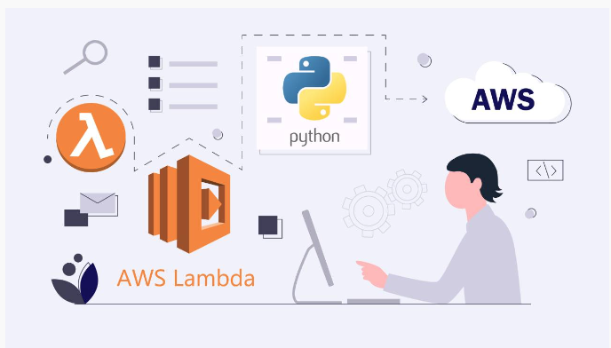
Step 1: Getting Set Up
This project requires some installations and tools, so to begin, we will set up some things on our local computer.1. Install Python.
2. Install Boto3. Boto3 is a Python SDK provided by AWS that allows developers to interact with AWS services programmatically.
3. Create an IAM user with a programmatic access key.
4. Install the AWS command line (CLI).
5. Run the AWS configure command.
aws configure
6. Install Visual Studio Code.7. Install extensions (Jupyter and Pylance).
8. Sign up for a GitHub account.
9. Install Git.
10. Generate a key pair for secure connections (Mac). This is so we can clone our GitHub repository.
ssh-keygen -b 4096 -t rsa
11. Add public SSH key to GitHub.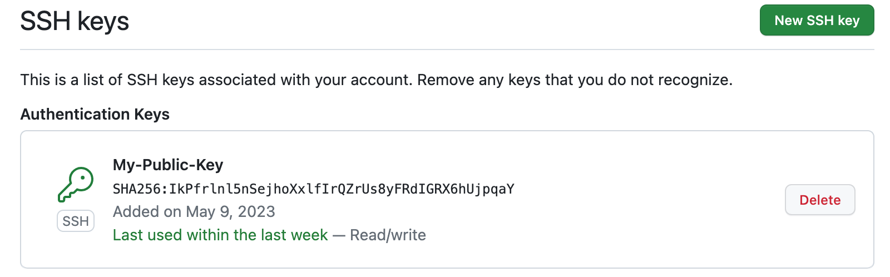
Step 2: Creating a Lambda Function Using Python that Will Trigger When a File is Added to S3 Bucket
We are going to create a Lambda function with Python that triggers when a file is added to an S3 bucket and moves it to a folder with the format YYYYMMDD/filename, based on the file's creation date.1. Create the S3 bucket.
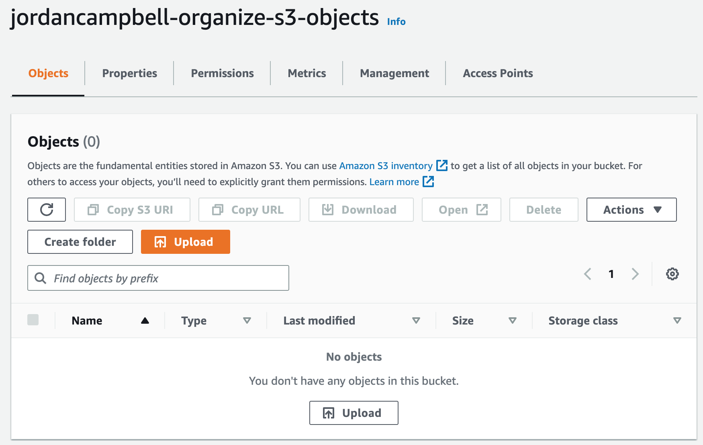
2. Create a repository in GitHub that will store our Python code.
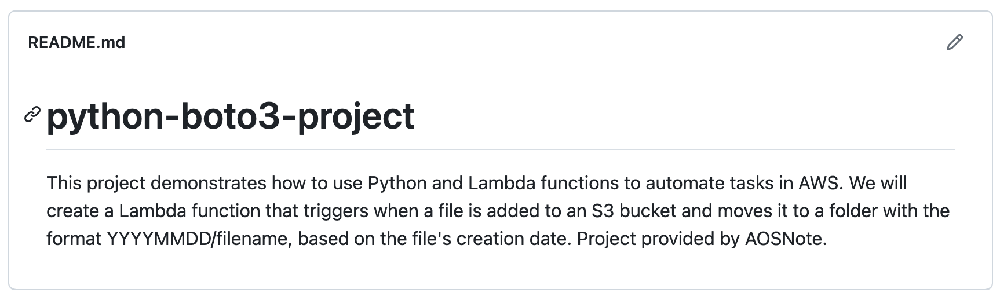
3. Clone the repository to our computer. This will create a local copy of our remote Git repository.
git clone < ssh clone url >
4. Open VS Code and add a file with a Jupyter Notebook extension (.ipynb). This is so we can run and check for any errors in each block of our code.5. Write Python script.
Jupyter Notebook Python Script on GitHub
6. Convert Jupyter Notebook code to Python format.7. Create another S3 bucket. We will use this bucket to store our Python code.
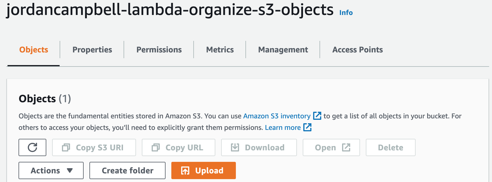
8. Upload our code as a zip file so Lambda can pull the code from the bucket.
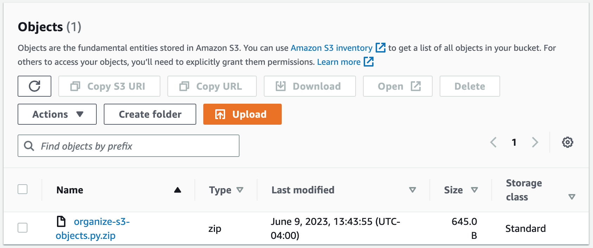
9. Create an IAM role for the Lambda function. This is so Lambda will have access to the S3 buckets and permission to do basic execution.
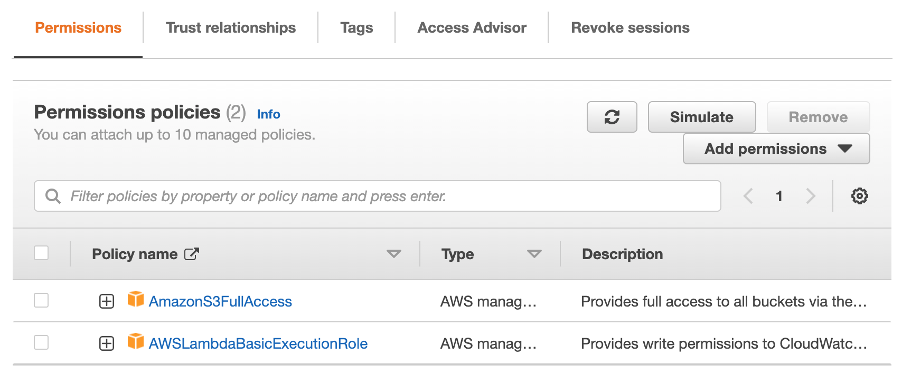
10. Create the Lambda function.
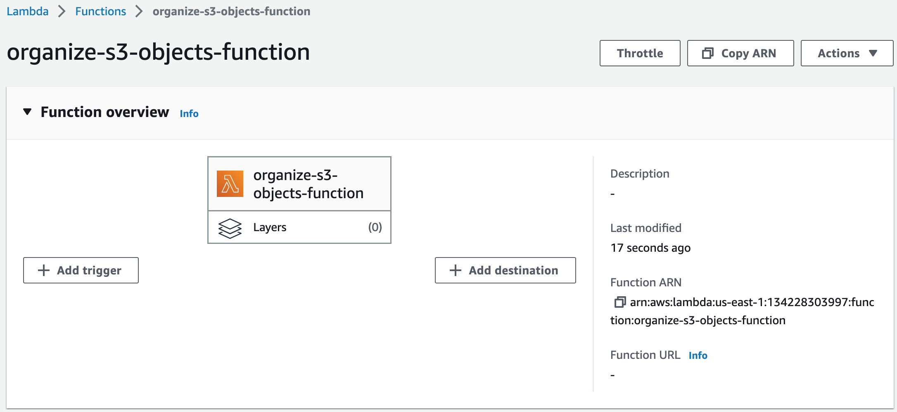
11. Add an S3 trigger to the Lambda function. This will make it so anytime someone adds a file to the S3 bucket, it will trigger this function.
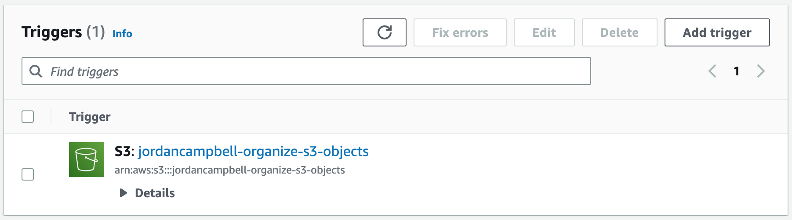
12. Upload the Python code to the Lambda function.
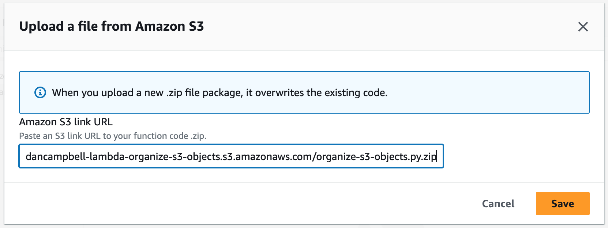
13. Update the handler settings.
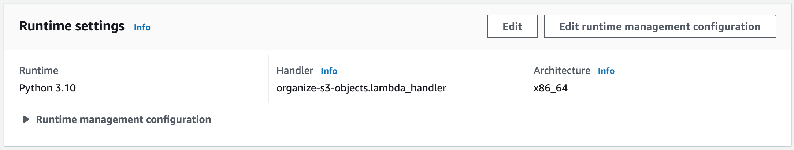
14. Create a test event. This allows us to test our Python code in the Lambda function console.
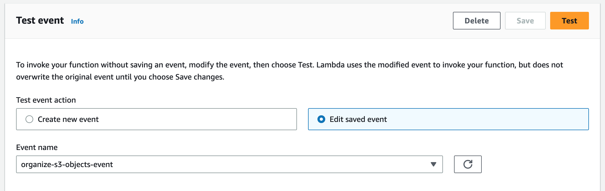
We can see it ran successfully.
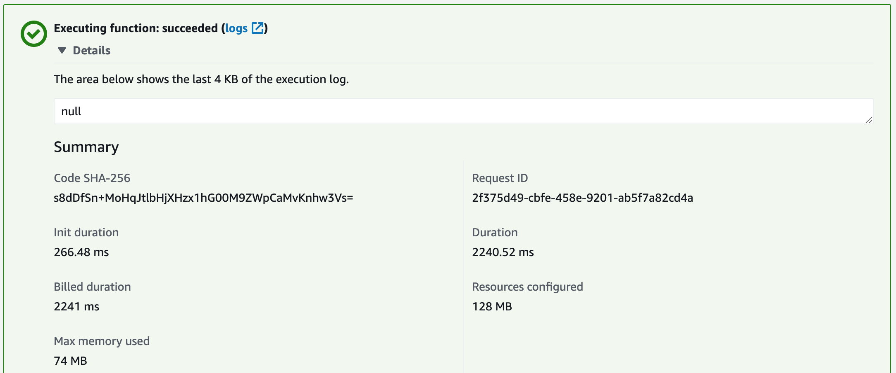
15. Finally, we will test whether our Lambda function is working. We will do this by uploading some files into our S3 bucket.
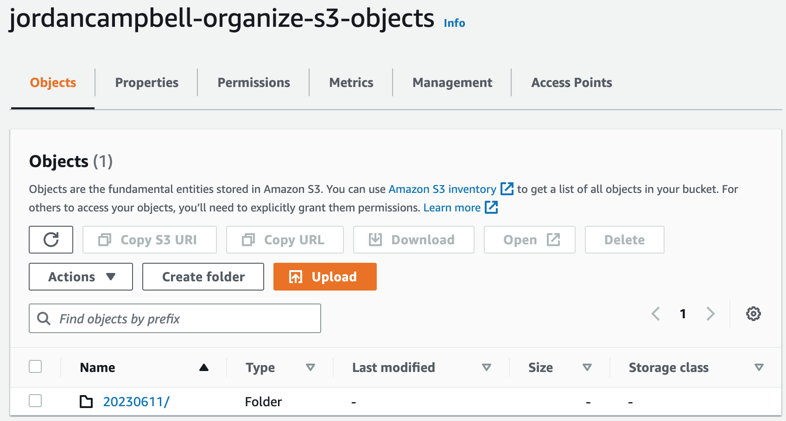
The function was successful.
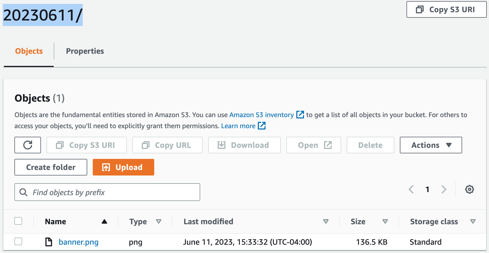
Step 3: Clean Up Resources
We will now clean up the resources we used in this project by deleting the Lambda function, both S3 buckets, and the IAM role.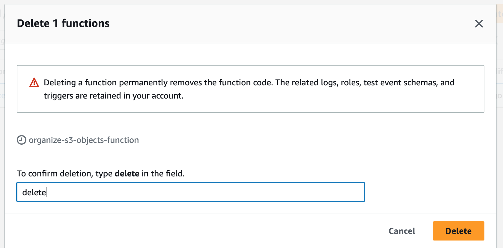
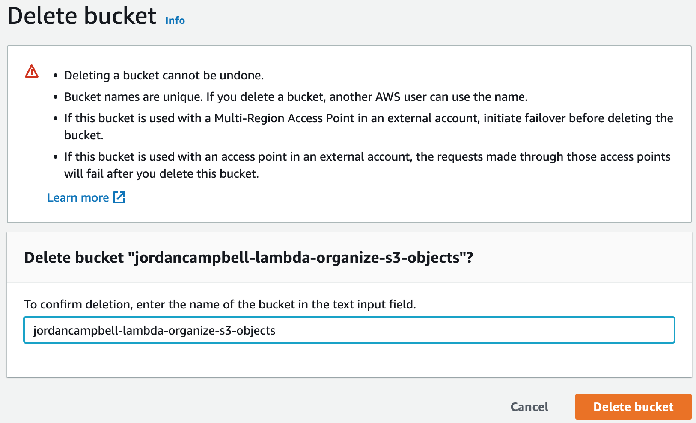
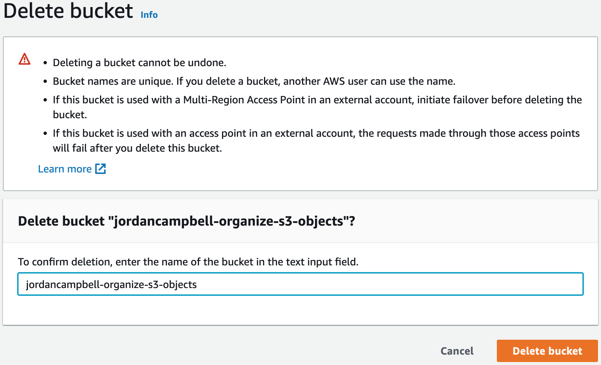
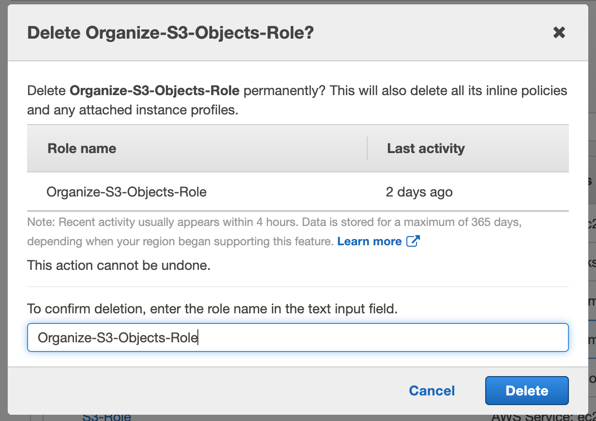